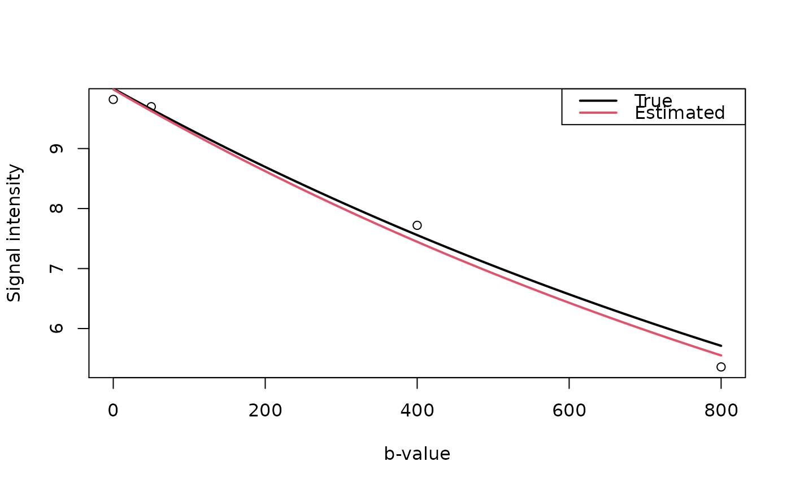

ADC-methods.RdEstimation of apparent diffusion coefficient (ADC) values, using a single exponential function, is achieved through nonlinear optimization.
ADC.fast(dwi, ...)
# S4 method for array
ADC.fast(
dwi,
bvalues,
dwi.mask,
control = minpack.lm::nls.lm.control(maxiter = 150),
multicore = FALSE,
verbose = FALSE
)
adc.lm(signal, b, guess, control = minpack.lm::nls.lm.control())| dwi | Multidimensional array of diffusion-weighted images. |
|---|---|
| ... | Additional variables defined by the method. |
| dwi.mask | Logical array that defines the voxels to be analyzed. |
| control | An optional list of control settings for |
| multicore | is a logical variable (default = |
| verbose | Additional information will be printed when
|
| signal | Signal intensity vector as a function of b-values. |
| b, bvalues | Diffusion weightings (b-values). |
| guess | Initial values of \(S_0\) and \(D\). |
A list structure is produced with estimates of \(S_0\), \(D\) and information about the convergence of the nonlinear optimization routine.
The adc.lm function estimates parameters for a vector of observed MR
signal intensities using the following relationship $$S(b) = S_0
\exp(-bD),$$ where \(S_0\) is the baseline signal intensity and \(D\)
is the apparent diffusion coefficient (ADC). It requires the routine
nls.lm that applies the Levenberg-Marquardt algorithm. Note, low
b-values (\(<50\) or \(<100\) depending on who you read) should be
avoided in the parameter estimation because they do not represent
information about the diffusion of water in tissue.
The ADC.fast function rearranges the assumed multidimensional (2D or
3D) structure of the DWI data into a single matrix to take advantage of
internal R functions instead of loops, and called adc.lm.
Buxton, R.B. (2002) Introduction to Functional Magnetic Resonance Imaging: Principles & Techniques, Cambridge University Press: Cambridge, UK.
Callahan, P.T. (2006) Principles of Nuclear Magnetic Resonance Microscopy, Clarendon Press: Oxford, UK.
Koh, D.-M. and Collins, D.J. (2007) Diffusion-Weighted MRI in the Body: Applications and Challenges in Oncology, American Journal of Roentgenology, 188, 1622-1635.
Brandon Whitcher bwhitcher@gmail.com
S0 <- 10
b <- c(0, 50, 400, 800) # units?
D <- 0.7e-3 # mm^2 / sec (normal white matter)
## Signal intensities based on the (simplified) Bloch-Torry equation
dwi <- function(S0, b, D) {
S0 * exp(-b*D)
}
set.seed(1234)
signal <- array(dwi(S0, b, D) + rnorm(length(b), sd=0.15),
c(rep(1,3), length(b)))
ADC <- ADC.fast(signal, b, array(TRUE, rep(1,3)))
unlist(ADC) # text output
#> S0 D S0.error D.error
#> 9.985900e+00 7.337532e-04 1.671637e+00 5.369434e+03
par(mfrow=c(1,1)) # graphical output
plot(b, signal, xlab="b-value", ylab="Signal intensity")
lines(seq(0,800,10), dwi(S0, seq(0,800,10), D), lwd=2, col=1)
lines(seq(0,800,10), dwi(c(ADC$S0), seq(0,800,10), c(ADC$D)), lwd=2, col=2)
legend("topright", c("True","Estimated"), lwd=2, col=1:2)
